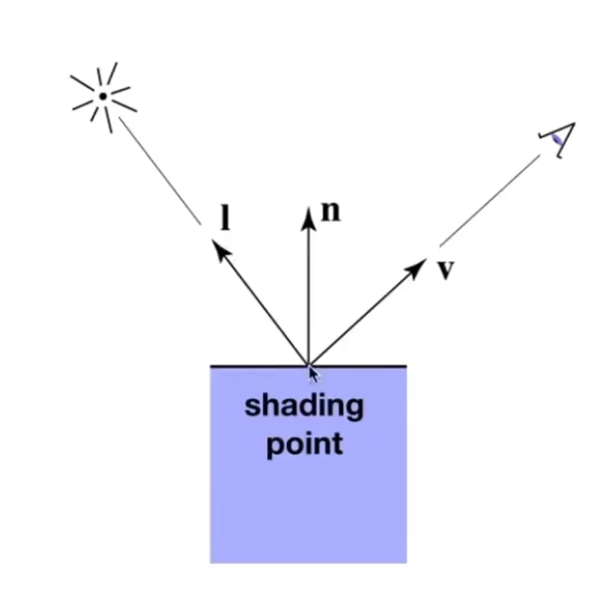
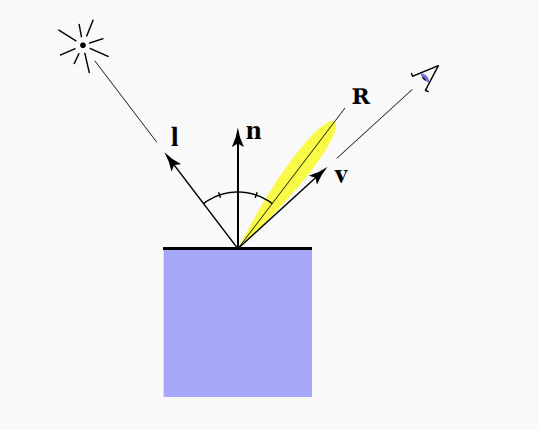
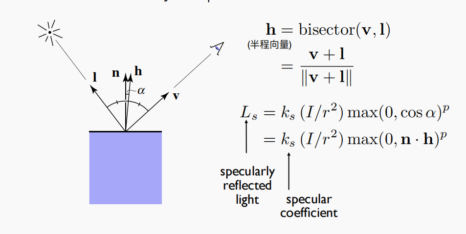
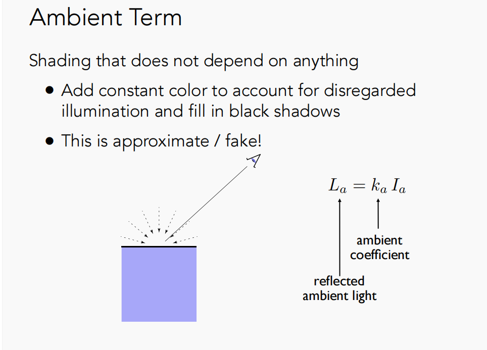
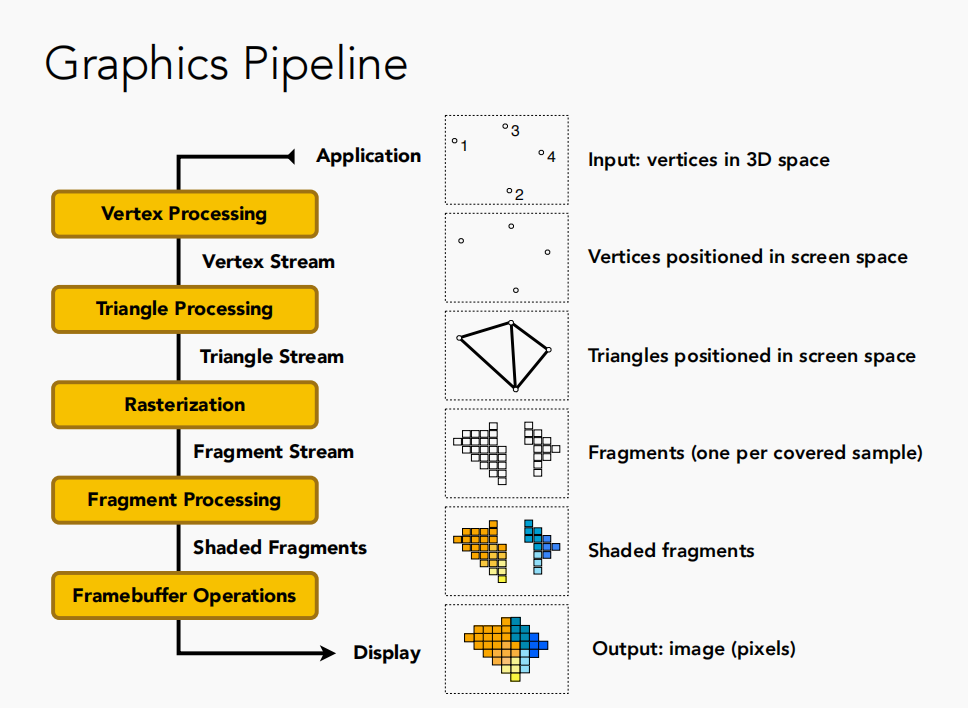

GAMES101Notes
- Modeling
->transformation, rotation, scaling
eg. Camera & IK
- Viewing
-> (3D to 2D)projection
Scale
x′=sxy′=sy
[x′y′]=[s00s][xy]
[x′y′]=[sx00sy][xy]
Reflection Matrix
x′=−xy′=−y
[x′y′]=[−100−1][xy]
Shear Matrix
x′=x+ayy′=y+bx
[x′y′]=[1ba1][xy]
Rotate(abount origin(0,0),CCW by default)『绕原点，逆时针』
x′=xcosθ−ysinθy′=xsinθ+ycosθ
[x′y′]=[cosθsinθ−sinθcosθ][xy]
R=[cosθsinθ−sinθcosθ]
x′=ax+byy′=cx+dy
[x′y′]=[acbd][xy]
x′=Mx
Translation
x′=x+txy′=y+ty
[x′y′]=[1001][xy]+[txty]
[x′y′]=[acbd][xy]+[txty]
显然，平移不是线性变换
但是我们想要有一个大统一的概念可以描述这些变换
Homogeneous Coordinates『齐次坐标』
Add a third coordinate w to (x,y)
- 2D point: =(x,y,1)T
- 2D vector: =(x,y,0)T
Maxtrix representation of translation
⎣⎢⎡x′y′w′⎦⎥⎤=⎣⎢⎡100010txty1⎦⎥⎤⋅⎣⎢⎡xy1⎦⎥⎤=⎣⎢⎡x+txy+ty1⎦⎥⎤
w 的意义是什么呢？
In homogeneous coordinates,
⎣⎢⎡xyw⎦⎥⎤ is the 2D point ⎣⎢⎡wxwy1⎦⎥⎤,w=0
scale
S(sx,sy)=⎣⎢⎡sx000sy0001⎦⎥⎤
rotate
R(θ)=⎣⎢⎡cosθsinθ0−sinθcosθ0001⎦⎥⎤
shear
H(a,b)=⎣⎢⎡1b0a10001⎦⎥⎤
translate
T(tx,ty)=⎣⎢⎡100010txty1⎦⎥⎤
逆变换刚好对应逆矩阵
逆矩阵的求法
当一个矩阵的逆等同于他的伴随矩阵，那么这个矩阵是正交矩阵。
旋转矩阵是正交矩阵
-
Scale
S(sx,sy,sz)=⎣⎢⎢⎢⎡sx0000sy0000sz00001⎦⎥⎥⎥⎤
-
Translate
T(tx,ty,tz)=⎣⎢⎢⎢⎡100001000010txtytz1⎦⎥⎥⎥⎤
-
Rotate(Around x-, y-, z-axis)
Rx(θ)=⎣⎢⎢⎢⎡10000cosθsinθ00−sinθcosθ00001⎦⎥⎥⎥⎤
Ry(θ)=⎣⎢⎢⎢⎡cosθ0−sinθ00100sinθ0cosθ00001⎦⎥⎥⎥⎤
Rz(θ)=⎣⎢⎢⎢⎡cosθsinθ00−sinθcosθ0000100001⎦⎥⎥⎥⎤
Rotation by angle α around axis n
R(n,α)=cos(α)I+(1−cos(α))nnT+sin(α)NN=⎣⎢⎡0nz−ny−nz0nxny−nx0⎦⎥⎤
Orthographic projection『正交投影』
- 相机置于原点，面朝 -z 轴
- 丢掉 z 轴
- Translate and scale to [−1,1]2
In general
- We want to map a cuboid [l,r]×[b,t]×[f,n] to the “canonical” cube[−1,1]3
Translate(center to origin) -> Scale(length/width/height to 2)
Mortho=⎣⎢⎢⎢⎡r−l20000t−b20000n−f200001⎦⎥⎥⎥⎤⋅⎣⎢⎢⎢⎡100001000010−2r+l−2t+b−2n+f1⎦⎥⎥⎥⎤=⎣⎢⎢⎢⎡r−l20000t−b20000n−f20−r−lr+l−t−bt+b−n−fn+f1⎦⎥⎥⎥⎤
Perspective projection『透视投影』
- First “aquish” the frustum into a cuboid (n→n,f→f)(Mpersp→ortho)
- Do orthographic projection
-
In order to find a transformation
- Find the relationship between transformed points (x′,y′,z′)
and original points (x,y,z)
- y′=znyx′=znx --> similar to y′
-
In homogeneous corrdinates
⎣⎢⎢⎢⎡xyz1⎦⎥⎥⎥⎤Mpersp→ortho⎣⎢⎢⎢⎡znxznyunknown1⎦⎥⎥⎥⎤mult.byz⎣⎢⎢⎢⎡nxnyunknownz⎦⎥⎥⎥⎤
显然，我们可以逆推出 Mpersp→ortho 长这样
Mpersp→ortho=⎣⎢⎢⎢⎡n0?00n?000?100?0⎦⎥⎥⎥⎤
近和远处的 z 不会发生变化
把 z 代换成 n，n 是我们取得特殊定值
⎣⎢⎢⎢⎡xyz1⎦⎥⎥⎥⎤=⎣⎢⎢⎢⎡nxnyunknownz⎦⎥⎥⎥⎤replace z with n⎣⎢⎢⎢⎡xyn1⎦⎥⎥⎥⎤→⎣⎢⎢⎢⎡nxnyn2n⎦⎥⎥⎥⎤
我们现在要求解第三行，且我们知道 x 轴和 y 轴对 z 轴没有影响, 因为最终的结果中没有 x 和 y
[0 0 A B]⋅⎣⎢⎢⎢⎡xyn1⎦⎥⎥⎥⎤=n2
我们可以推出
[00AB]⋅⎣⎢⎢⎢⎡xyn1⎦⎥⎥⎥⎤=n2⇒An+B=n2
我们又知道任何点的 z 坐标在远平面上都不会变化，所以我们可以推出
⎣⎢⎢⎢⎡00f1⎦⎥⎥⎥⎤⇒⎣⎢⎢⎢⎡00f1⎦⎥⎥⎥⎤==⎣⎢⎢⎢⎡00f2f⎦⎥⎥⎥⎤⇒Af+B=f2
解得
A=n+fB=−nf
所以
Mpersp→ortho=⎣⎢⎢⎢⎡n0000n0000n+f100−nf0⎦⎥⎥⎥⎤
Mpersp=Mortho⋅Mpersp→ortho=⎣⎢⎢⎢⎡r−l20000t−b20000n−f20−r−lr+l−t−bt+b−n−fn+f1⎦⎥⎥⎥⎤⋅⎣⎢⎢⎢⎡n0000n0000n+f100−nf0⎦⎥⎥⎥⎤=⎣⎢⎢⎢⎡r−l2n0000t−b2n00r−lr+lt−bt+bn−fn+f100n−f2nf0⎦⎥⎥⎥⎤
Rasterization(Triangles)光栅化
定义 field of view(fovY)垂直的可视角度 和 aspect ratio(w/h)屏幕长宽比

n:near, t:top, b:bottom, l:left, r:right
视口变换
⎣⎢⎢⎢⎡xyz1⎦⎥⎥⎥⎤=⎣⎢⎢⎢⎡2w00002h0000102w2h01⎦⎥⎥⎥⎤⋅⎣⎢⎢⎢⎡xyz1⎦⎥⎥⎥⎤
Sample 『采样』
- Sample if center of pixel is inside triangle
1
2
3
4
5
6
7
8
9
10
11
12
13
14
15
16
17
18
19
| int Inside(tri,x,y) => Point(x,y) in tri ? 1 : 0;
for (int y = 0; y < h; y++)
{
for (int x = 0; x < w; x++)
{
image[x][y] = Inside(tri,x + 0.5f,y + 0.5f);
}
}
做叉积判断点 Q 是否在 tri 内
|
采样率低 => 走样 => 锯齿…
Anti-aliasing『反走样/抗锯齿』
采样之前做一个滤波(filtering)
- Frequency『频率』
- Frequency domain『频域』
数字信号处理相关的前置知识
傅里叶变换 => 把函数从时域转换到频域

- Low-pass filter『低通滤波器』
- High-pass filter『高通滤波器』
- Band-pass filter『带通滤波器』
- Band-stop filter『带阻滤波器』
- Gaussian filter『高斯滤波器』
- Box filter『盒子滤波器』
…
Filtering = Convolution『卷积』= Average『平均』= Blurring『模糊』
时域卷积 = 频域乘积

采样是重复原始信号的频谱
- 采样定理:
在进行模拟/数字信号的转换过程中，当采样频率fs.max大于信号中最高频率fmax的2倍时(fs.max>2fmax)，采样之后的数字信号完整地保留了原始信号中的信息，一般实际应用中保证采样频率为信号最高频率的2.56～4倍；采样定理又称奈奎斯特定理。
采样定理，频谱混叠和傅里叶变换 深入理解
这篇文章很好地解释了为什么"对于一个连续的信号采样，采样后的频谱相当于将采样前的频谱进行延拓"
A visual explanation of aliasing and repetition with the DTFT
时域采样得到的离散信号并不只代表这个时域信号，有无数多个频率不同的信号的采样结果是一样的，也就导致了频域上的周期延拓
有无数个高频分量可以匹配相同的离散数据，因此离散信号的频域包含所有这些频率。

当延拓的图形重合的时候，我们就认定这时候发生了走样。
要反走样，最直接的办法就是增加采样率，在现实中的意义就是“换一个更好的分辨率更好的显示器”（让图形之间离得更远）
从算法/软件角度来说，我们也可以采用之前的在采样前添加滤波的方法。我们可以给图像添加一个低通滤波，把高频的信息去掉。（让图形更瘦）
Antialiasing By Supersampling『超采样』(MSAA)
将一个像素近似认为更多的像素 => 给一个像素内部增加更多的采样点
=> 工业界的做法
Fast Approximate Antialiasing『快速近似反走样/抗锯齿』(FXAA)
图像的后期处理 => 通过图像匹配的办法把存在锯齿的边界找到，并且更换成没有锯齿的边界 => 效率高
Temporal Antialiasing『时域反走样/抗锯齿』(TAA)
静态场景中 => 复用上一帧感知的结果 => 相当于把 MSAA 对应的样本分布在了时间上，并且在当前帧没有引入任何额外操作
Z-buffering『深度缓冲』
Painter’s Algorithm『画家算法』
基本思想
先将画面中的物体按其距离观察点的远近进行排序，结果存放在一张线形表中。距观察点远者称其优先级高，放在表头,距观察点近者称其优先级低，放在表尾，这张表称为深度优先级表。
然后按照从表头到表尾的顺序逐个绘制物体。由于距观察者近的物体在表尾最后画出，它覆盖了远处的物体，最终在屏幕上产生了正确的遮挡关系。
缺陷

Z-Buffer
- frame buffer 存贮当前看到的场景
- depth buffer 存储每个像素所看到的几何物体最浅的深度的信息

1
2
3
4
5
6
7
8
| Initialize depth buffer to +∞
During rasterization:
for(each triangle T)
for(each sample (x,y,z) in T)
if(z < zbuffer[x,y])
zbuffer[x,y] = z;
framebuffer[x,y] = color;
|
处理不了透明物体
Shading『着色』
The process of applying a material to an object.
Blinn–Phong reflection model『布林-冯反射模型』
经验模型
- Ambient『环境光』
- Diffuse『漫反射』
- Specular『镜面反射/高光』
Compute light reflected toward camera at a specific shading point
Inputs:
- Viewer direction，观察方向，使用v表示
- Surface normal，法线方向，使用n表示
- Light direction，光线方向，使用l(小写的L)表示

Shading is Local => 着色不考虑其他物体的影响，只考虑着色点自身，故而只有明暗，没有阴影
Diffuse Reflection
从接收角度看：
In general, light per unit area is proportional to the cosine of the angle between the light direction and the surface normal => cosθ=l⋅n
从输出角度看

光的能量会在传播中被“稀释”，一个单位面积上接收到的光的能量和光线传播的距离的平方成反比 => I/r2 => 球！
综合来看
Ld=kd(I/r2)max(0,n⋅l)
Ld is diffusely
kd is diffuse coefficient(color)
I/r2 is energy arrived at the shading point
max(0,n⋅l) is energy recevied by the shading point
观察方向对漫反射像完全没有影响 => 因为反射是完全随机的，因此可以认为漫反射光在任何反射方向上的分布都是一样的
Specular highlights

观察方向接近反射方向的时候才能观察到高光像

v close to mirror direction(观察方向接近反射方向) <=> half vector near normal(半程向量接近法线向量)
h=bisector(v,l)=∣∣l+v∣∣l+v
\begin{alignat}{2}
L_s = k_s(I/r^2)max(0, \cos\alpha)^p
\\ = k_s(I/r^2)max(0,\vec{n}\cdot\vec{h})^p
\end{alignat}
α is the angle between h and n
p is the shininess coefficient => Increasing p narrows the reflection lobe 『增大 p 可以缩小反射波瓣』 => 取值范围(100,200)
Ambient lighting
La=kaIa
环境光可以被简单的视为一个常数，尤其是在 Blinn–Phong model 中，但实际上他比这复杂得多
La is reflected ambient light
ka is ambient coefficient

将所有的项都加起来
\begin{alignat}{2}
L & = L_a + L_d + L_s \\
& = k_a I_a + k_d(I/r^2)max(0,\vec{n}\cdot\vec{l}) + k_s(I/r^2)max(0,\vec{n}\cdot\vec{h})^p
\end{alignat}
参考：
Blinn-Phong光照模型从定义到实现
Shading Frequency『着色频率』
- 每个平面做一次shading => Flat shading
- 每个顶点做一次shading => Gouraud shading
- 每个像素做一次shading => Phong shading
顶点法线
下图展示了一个简单的求法

把目标顶点所关联的面的法线向量求和取平均，即可得到目标顶点的法线向量
Nv=∣∣∑i=1nNi∣∣∑i=1nNi
如果对三角形面进行加权，可以得到更精确的计算结果
像素法线
已经得知了顶点法线后，问题可以转化为如何得到三角形面内部的一个平滑过渡的法线(假设三角形面大于至少一个像素) => 重心坐标 + 归一化
Graphics (Real-time Rendering) Pipeline『图形管线』

shader toy
GPU 高度并行化处理
Texture Mapping『纹理映射』
在纹理上定义一个坐标系(u,v)(就是我们常说的 UV)，然后把纹理坐标映射到纹理上 => u 和 v 的取值范围是[0,1]
纹理要设计好在上下左右重复的时候无缝衔接 => tiled => method eg. Wang tiling
参考资料
- 闫令祺-GAMES101
- 采样定理，频谱混叠和傅里叶变换 深入理解
- A visual explanation of aliasing and repetition with the DTFT
- Blinn-Phong光照模型从定义到实现
- shader toy
- 剑 来!'s 计算机图形学笔记